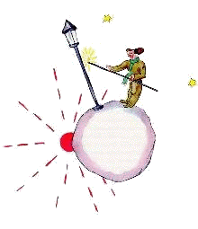

小王子 The Little Prince
第14章
第14章
第五颗行星非常奇怪。这是最小的一颗。上面刚好只能容得下一盏路灯和一个点灯人。小王子好生纳闷，在天空的一个角落，在一个既没有房子也没有居民的行星上，要一盏路灯和一个点灯人，又能有什么用呢？不过他还是对自己说：
“很可能这个人是有点不正常。但是跟那个国王，那个爱虚荣的人，那个商人和那个酒鬼比起来，他还是要比他们正常些。至少他的工作还有意义。他点亮路灯，就好比唤醒了另一个太阳或者一朵花儿。他熄灭路灯，就好比让这朵花儿或这个太阳睡觉了。这是件很美的事情。既然很美，自然就有用啰！”
他一到这个星球，就很尊敬地向点灯人打招呼：
“早上好。你刚才为什么把路灯熄掉呢？”
“这是规定，”点灯人回答说，“早上好。”
“什么规定？”
“熄灭路灯呗。晚上好。”
说着他又点亮了路灯。
“那你刚才为什么又点亮路灯呢？”
“这是规定，”点灯人回答说。
“我弄不懂，”小王子说。
“没什么要弄懂的，”点灯人说，“规定就是规定。早上好。”
说着他熄灭了路灯。
然后他用一块有红方格的手帕擦了擦额头。
“我干的是件非常累人的差事。以前还说得过去。我早晨熄灯，晚上点灯。白天我有时间休息，夜里也有时间睡觉……”
“那么，后来规定改变了？”
“规定没有改变，”点灯人说，“惨就惨在这儿！这颗行星一年比一年转得快，可规定却没变！”
“结果呢？”小王子说。
“结果现在每分钟转一圈，我连一秒钟的休息时间都没有。我每分钟就要点一次灯，熄一次灯！”
“这可真有趣！你这儿一天只有一分钟！”
“一点也不有趣，”点灯人说，“我们说着话，就已经一个月过去了。”
“一个月？”
“对。三十分钟。三十天！晚上好。”
说着他点亮了路灯。
小王子瞧着他，心里喜欢上了这个忠于职守的点灯人。他想起了自己以前的挪椅子看日落。他挺想帮助这个朋友：
“你知道……我有一个办法，好让你想休息就能休息……”
“我一直想休息，”点灯人说。
因为，一个人可以同时是忠于职守的，又是生性疏懒的。
小王子接着说：
“你的星球小得很，你走三步就绕了一圈。所以你只要走得慢一些，就可以一直待在阳光下。你要想休息了，就往前走……你要白天有多长，它就有多长。”
“这办法帮不了我多少忙，”点灯人说，“我这人，平生就喜欢睡觉。”
“真不走运，”小王子说。
“真不走运，”点灯人说，“早上好。”
说着他熄灭了路灯。
“这个人呀，”小王子一边继续他的旅途，一边在想，“国王也好，爱虚荣的人也好，酒鬼也好，商人也好，他们都会瞧不起这个人。可是，就只有他没让我感到可笑。也许，这是因为他关心的是别的事情，而不是自己。”
他惋惜地叹了口气，又自言自语：
“只有这个人我可以跟他交朋友。可是他的星球实在太小了。两个人挤不下……”
小王子不敢承认的是，他留恋这颗受上苍眷顾的星球，是因为每二十四小时就有一千四百四十次日落！